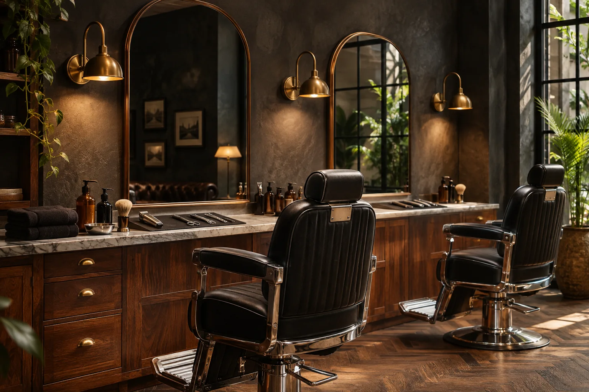

Corte masculino
Máquina e tesoura, com acabamento na nuca e nas laterais.
Escolher corteCorte, barba e toalha quente. Agende seu horário pelo WhatsApp.

Ambiente conceitual gerado por IACadeira confortável, conversa boa e atenção no acabamento.
Aqui a ideia é simples: entender como você gosta do cabelo e da barba e fazer um serviço bem cuidado, da máquina à navalha.
Aurum é uma barbearia fictícia criada para este projeto.
Serviços e valores demonstrativos.
Máquina e tesoura, com acabamento na nuca e nas laterais.
Escolher corteDesenho da barba, toalha quente e acabamento com navalha.
Escolher barbaCabelo e barba no mesmo atendimento, com todos os acabamentos.
Escolher comboImagens conceituais geradas por IA, não fotos de uma unidade real.
Avaliações demonstrativas: todos os nomes e relatos abaixo são fictícios. Não representam clientes reais.
“Um lugar que faz a gente esquecer a correria. O cuidado vai muito além do corte.”
“O corte ficou exatamente como eu imaginei. Ambiente acolhedor e atenção em cada detalhe.”
“A toalha quente e a conversa tranquila viraram a minha parte favorita da semana.”
Rua do Estilo — Bairro Jardim
Cidade Exemplo, Brasil
Endereço fictício. Não há uma unidade física neste local.
Horários demonstrativos — atendimento mediante agendamento.
Escolha o serviço. Depois, consulte os horários pelo WhatsApp.
Preços e durações demonstrativos. Nenhuma reserva é feita automaticamente.